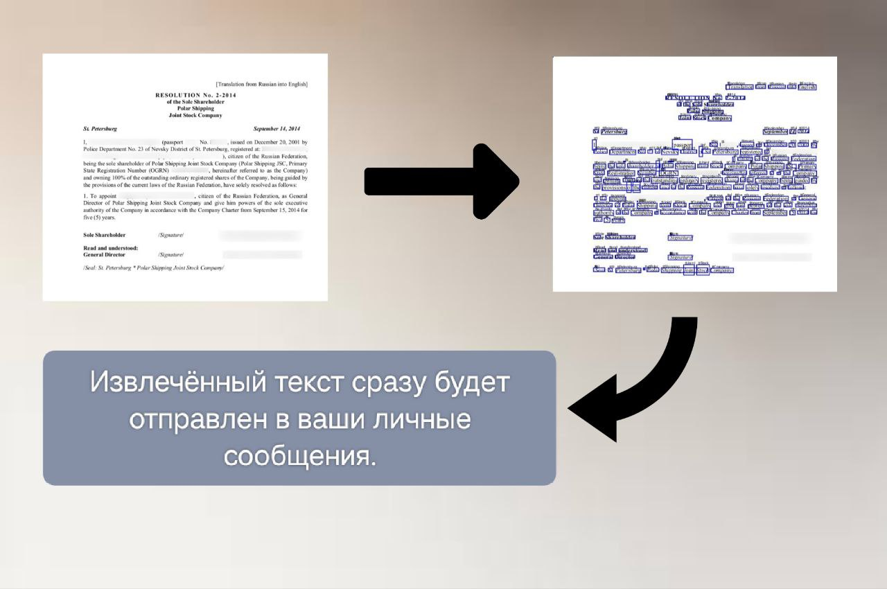

📜 Что умеет бот?
ScanToTextBot использует современные технологии OCR для извлечения текста из загруженных изображений и документов. Просто отправьте файл и получите текстовый результат!
🔧 Как начать пользоваться?
1️⃣ Перейдите в Telegram
Нажмите на кнопку ниже и откройте бота в Telegram.
2️⃣ Отправьте изображение
Пришлите изображение или документ боту.
3️⃣ Получите результат
Бот вернёт распознанный текст в ответном сообщении.
✨ Попробуйте прямо сейчас!
🚀 Запустить бота в Telegram📧 Хотите связаться с нами?
Есть идеи или предложения? Напишите нам!
📝 Перейти к форме обратной связи